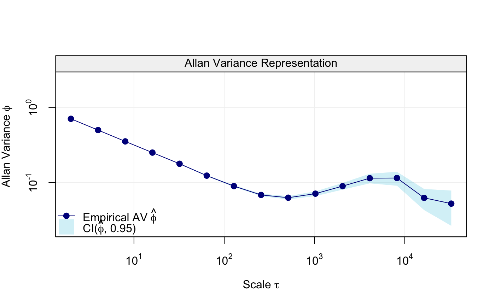
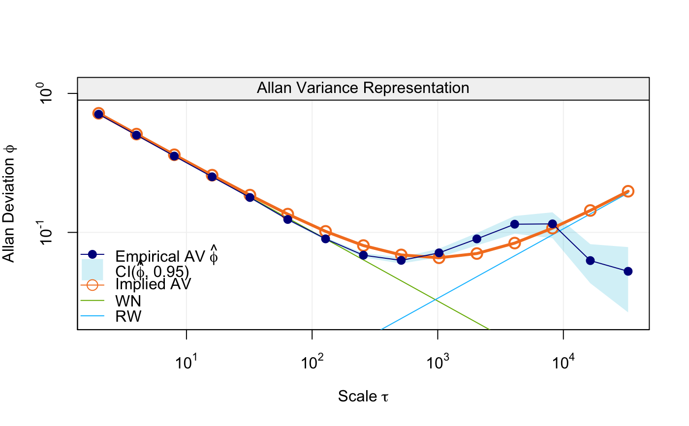

avlr.Rd
Compute the latent processes parameters estimator based on the Allan Variance
avlr(x, qn = NULL, wn = NULL, rw = NULL, dr = NULL, type = "mo", ci = FALSE, B = 100, alpha = 0.05)
| x | A |
|---|---|
| qn | A |
| wn | A |
| rw | A |
| dr | A |
| type | A |
avlr A list that contains:
"estimates"
"implied_ad"The Allan Deviation implied by the estimated parameter.
"implied_ad_decomp"The Allan Deviation implied by the estimated parameter for the sub-processes.
"av"The avar object provided or corresponding to the data provided.
# Load simts package library(simts) # Set seed for reproducibility set.seed(999) # Simulate time series N = 100000 x = gen_gts(N, WN(sigma2 = 1) + RW(gamma2 = 1e-5)) # Compute av av = avar(x) plot(av)# Parameter estimation fit = avlr(av, wn = 1:8, rw = 10:15) plot(fit, decomp = TRUE)# Point estimates fit#> #> Estimates: #> Value #> WN 1.015074672 #> RW 0.001838161# Compute confidence intervals (this can take some time) fit = avlr(av, wn = 1:8, rw = 10:15, ci = TRUE)#> [1] "Starting bootstrap:" #> | | | 0% | |= | 1% | |= | 2% | |== | 3% | |=== | 4% | |==== | 5% | |==== | 6% | |===== | 7% | |====== | 8% | |====== | 9% | |======= | 10% | |======== | 11% | |======== | 12% | |========= | 13% | |========== | 14% | |========== | 15% | |=========== | 16% | |============ | 17% | |============= | 18% | |============= | 19% | |============== | 20% | |=============== | 21% | |=============== | 22% | |================ | 23% | |================= | 24% | |================== | 25% | |================== | 26% | |=================== | 27% | |==================== | 28% | |==================== | 29% | |===================== | 30% | |====================== | 31% | |====================== | 32% | |======================= | 33% | |======================== | 34% | |======================== | 35% | |========================= | 36% | |========================== | 37% | |=========================== | 38% | |=========================== | 39% | |============================ | 40% | |============================= | 41% | |============================= | 42% | |============================== | 43% | |=============================== | 44% | |================================ | 45% | |================================ | 46% | |================================= | 47% | |================================== | 48% | |================================== | 49% | |=================================== | 50% | |==================================== | 51% | |==================================== | 52% | |===================================== | 53% | |====================================== | 54% | |====================================== | 55% | |======================================= | 56% | |======================================== | 57% | |========================================= | 58% | |========================================= | 59% | |========================================== | 60% | |=========================================== | 61% | |=========================================== | 62% | |============================================ | 63% | |============================================= | 64% | |============================================== | 65% | |============================================== | 66% | |=============================================== | 67% | |================================================ | 68% | |================================================ | 69% | |================================================= | 70% | |================================================== | 71% | |================================================== | 72% | |=================================================== | 73% | |==================================================== | 74% | |==================================================== | 75% | |===================================================== | 76% | |====================================================== | 77% | |======================================================= | 78% | |======================================================= | 79% | |======================================================== | 80% | |========================================================= | 81% | |========================================================= | 82% | |========================================================== | 83% | |=========================================================== | 84% | |============================================================ | 85% | |============================================================ | 86% | |============================================================= | 87% | |============================================================== | 88% | |============================================================== | 89% | |=============================================================== | 90% | |================================================================ | 91% | |================================================================ | 92% | |================================================================= | 93% | |================================================================== | 94% | |================================================================== | 95% | |=================================================================== | 96% | |==================================================================== | 97% | |===================================================================== | 98% | |===================================================================== | 99% | |======================================================================| 100%# Estimated confidence intervals and standard deviations fit$ci#> $ci #> [,1] [,2] #> [1,] 1.00570415 1.032818415 #> [2,] 0.00121051 0.002413395 #> #> $sd #> [1] 0.0070806818 0.0003561046 #>